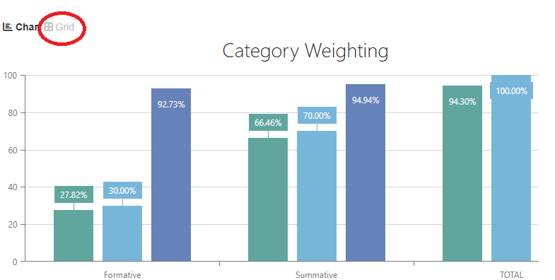
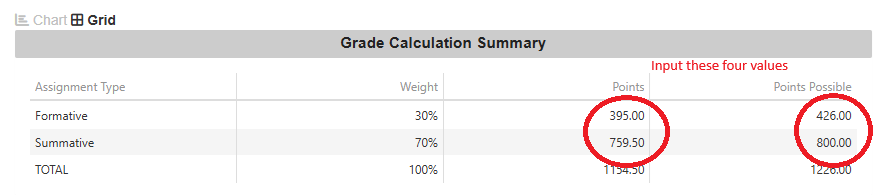

To use the calculator, first open up SIS and go to the class for which you want to check your grade. Once the bar graphs load in, click on the "Grid" button above the graphs.
Go to the formative row. The "points" cell is the amount of points you earned. The "points possible" is the amount of points you could have earned. Input these into the calculator.
Go to the summative row. The "points" cell is the amount of points you earned. The "points possible" is the amount of points you could have earned. Input these into the calculator. 
Now that you entered your current grades, it's time to figure out how big that next test(s)/assignment(s) will boost/screw you up. First figure out how what category the points will go into. Then add how many points the work will be worth into the "Add to possible formative points" and "add to possible summative points".This last step is something that up for you to decide. How good do you think you can do? How much do you need to move up a grade? Is it ok to skip the test? After thinking about this, enter a score that you want to test into the "add to formative/sumamtive points" and press the calculate button.
If you don't have points in a category, put it in as a 0.Have fun and good luck!